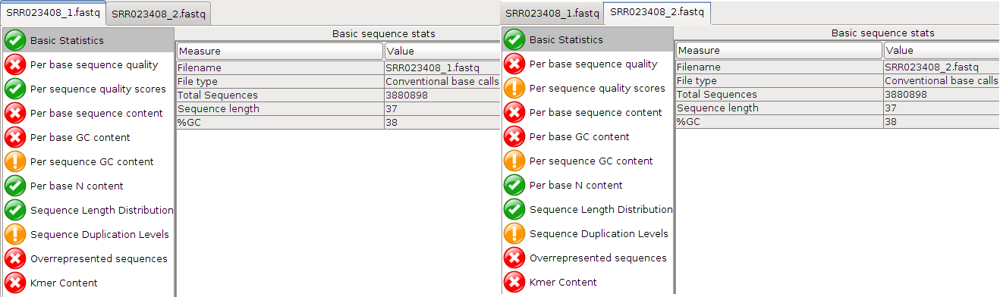
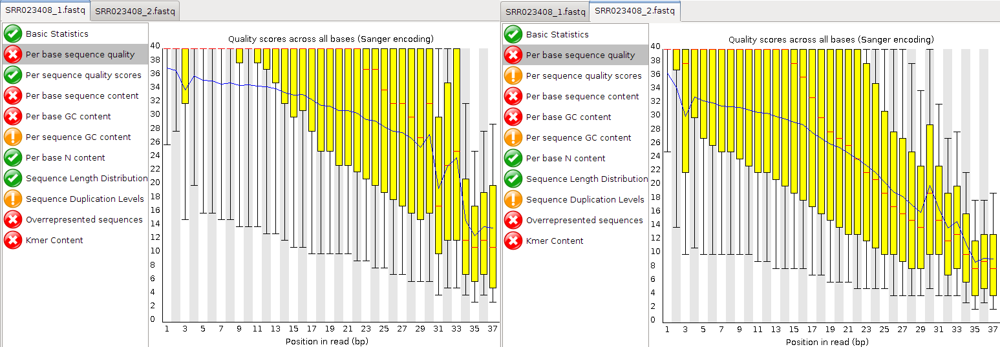

Assembling Paired-end Reads
The use of paired-end data in de novo genome assembly results in better quality assemblies, particularly for larger, more complex genomes. In addition, paired-end constraint violation (expected distance and orientation of paired reads) can be used to identify misassemblies.
If you are doing de novo assembly, pay the extra and get paired-ends: they’re worth it!
The data you will examine in this exercise is again from Staphylococcus aureus which has a genome of around 3MBases. The reads are Illumina paired end with an insert size of $~$350 bp.
The required data can be downloaded from the SRA. Specifically, the run data (SRR022852) from the SRA Sample SRS004748.
The following exercise focuses on preparing the paired-end FASTQ files ready for Velvet, using Velvet in paired-end mode and comparing results with Velvet’s ’auto’ option.
First move to the directory you made for this exercise and make a suitable named directory for the exercise:
cd /home/trainee/denovo/NGS/velvet/part2 mkdir SRS004748 cd SRS004748
There is no need to download the read files, as they are already stored locally. You will simply create a symlink to this pre-downloaded data using the following commands:
ln -s /home/trainee/denovo/data/SRR022852_?.fastq.gz ./
It is interesting to monitor the computer’s resource utilisation, particularly memory. A simple way to do this is to open a second terminal and in it type:
top
top is a program that continually monitors all the processes running
on your computer, showing the resources used by each. Leave this running
and refer to it periodically throughout your Velvet analyses.
Particularly if they are taking a long time or whenever your curiosity
gets the better of you. You should find that as this practical
progresses, memory usage will increase significantly.
Now, back to the first terminal, you are ready to run velveth and
velvetg. The reads are -shortPaired and for the first run you should
not use any parameters for velvetg.
From this point on, where it will be informative to time your runs. This
is very easy to do, just prefix the command to run the program with the
command time. This will cause UNIX to report how long the program took
to complete its task.
Set the two stages of velvet running, whilst you watch the memory usage
as reported by top. Time the velvetg stage:
velveth run_25 25 -fmtAuto -create_binary -shortPaired -separate SRR022852_1.fastq.gz SRR022852_2.fastq.gz time velvetg run_25
What does -fmtAuto and -create_binary do? (see help menu)
-fmtAuto tries to detect the correct format of the input files e.g.
FASTA, FASTQ and whether they are compressed or not.
-create_binary outputs sequences as a binary file. That means that
velvetg can read the sequences from the binary file more quickly that
from the original sequence files.
Comment on the use of memory and CPU for velveth and velvetg?
velveth uses only one CPU while velvetg uses all possible CPUs for
some parts of the calculation.
How long did velvetg take?
My own measurements are:\
real 1m8.877s; user 4m15.324s; sys 0m4.716s
Next, after saving your contigs.fa file from being overwritten, set
the cut-off parameters that you investigated in the previous exercise
and rerun velvetg. time and monitor the use of resources as
previously. Start with -cov_cutoff 16 thus:
mv run_25/contigs.fa run_25/contigs.fa.0 time velvetg run_25 -cov_cutoff 16
Up until now, velvetg has ignored the paired-end information. Now try
running velvetg with both -cov_cutoff 16 and -exp_cov 26, but
first save your contigs.fa file. By using -cov_cutoff and
-exp_cov, velvetg tries to estimate the insert length, which you
will see in the velvetg output. The command is, of course:
mv run_25/contigs.fa run_25/contigs.fa.1 time velvetg run_25 -cov_cutoff 16 -exp_cov 26
Comment on the time required, use of memory and CPU for velvetg?
Runtime is lower when velvet can reuse previously calculated data. By
using -exp_cov, the memory usage increases.
Which insert length does Velvet estimate?
Paired-end library 1 has length: 228, sample standard deviation: 26
Next try running velvetg in ‘paired-end mode‘. This entails running
velvetg specifying the insert length with the parameter -ins_length
set to 350. Even though velvet estimates the insert length it is always
advisable to check / provide the insert length manually as velvet can
get the statistics wrong due to noise. Just in case, save your last
version of contigs.fa. The commands are:
mv run_25/contigs.fa run_25/contigs.fa.2 time velvetg run_25 -cov_cutoff 16 -exp_cov 26 -ins_length 350 mv run_25/contigs.fa run_25/contigs.fa.3
How fast was this run?
My own measurements are:\
real 0m29.792s; user 1m4.372s; sys 0m3.880s
Take a look into the Log file.
What is the N50 value for the velvetg runs using the switches:\
Base run: 19,510 bp
-cov_cutoff 16
24,739 bp
-cov_cutoff 16 -exp_cov 26
61,793 bp
-cov_cutoff 16 -exp_cov 26 -ins_length 350
n50 of 62,740 bp; max 194,649 bp; total 2,871,093 bp
Try giving the -cov_cutoff and/or -exp_cov parameters the value
auto. See the velvetg help to show you how. The information Velvet
prints during running includes information about the values used
(coverage cut-off or insert length) when using the auto option.
What coverage values does Velvet choose (hint: look at the output that Velvet produces while running)?
Median coverage depth = 26.021837\ Removing contigs with coverage $<$ 13.010918 …
How does the N50 value change?
n50 of 68,843 bp; max 194,645 bp; total 2,872,678 bp
Run gnx on all the contig.fa files you have generated in the course
of this exercise. The command will be:
gnx -min 100 -nx 25,50,75 run_25/contigs.fa*
For which runs are there Ns in the contigs.fa file and why?
contigs.fa.2, contigs.fa.3, contigs.fa\ Velvet tries to use the provided (or infers) the insert length and fills ambiguous regions with Ns.
Comment on the number of contigs and total length generated for each run.
Filename No. contigs Total length No. Ns
Contigs.fa.0 631 2,830,659 0 Contigs.fa.1 580 2,832,670 0 Contigs.fa.2 166 2,849,919 4,847 Contigs.fa.3 166 2,856,795 11,713 Contigs.fa 163 2,857,439 11,526
:
AMOS Hawkeye
We will now output the assembly in the AMOS massage format and visualise the assembly using AMOS Hawkeye.
Run velvetg with appropriate arguments and output the AMOS message
file, then convert it to an AMOS bank and open it in Hawkeye:
time velvetg run_25 -cov_cutoff 16 -exp_cov 26 -ins_length 350 -amos_file yes -read_trkg yes time bank-transact -c -b run_25/velvet_asm.bnk -m run_25/velvet_asm.afg hawkeye run_25/velvet_asm.bnk
Looking at the scaffold view of a contig, comment on the proportion of “happy mates” to “compressed mates” and “stretched mates”.
Nearly all mates are compressed with no stretched mates and very few happy mates.
What is the mean and standard deviation of the insert size reported under the Libraries tab?
Mean: 350 bp SD: 35 bp
Look at the actual distribution of insert sizes for this library. Can you explain where there is a difference between the mean and SD reported in those two places?
We specified -ins_length 350 to the velvetg command. Velvet uses
this value, in the AMOS message file that it outputs, rather than its
own estimate.
You can get AMOS to re-estimate the mean and SD of insert sizes using intra-contig pairs. First, close Hawkeye and then run the following commands before reopening the AMOS bank to see what has changed.
asmQC -b run_25/velvet_asm.bnk -scaff -recompute -update -numsd 2 hawkeye run_25/velvet_asm.bnk
Looking at the scaffold view of a contig, comment on the proportion of “happy mates” to “compressed mates” and “stretched mates”.
There are only a few compressed and stretched mates compared to happy mates. There are similar numbers of stretched and compressed mates.
What is the mean and standard deviation of the insert size reported under the Libraries tab?
TODO Mean: 226 bp SD: 25 bp
Look at the actual distribution of insert sizes for this library. Does the mean and SD reported in both places now match?
Yes
Can you find a region with an unusually high proportion of stretched, compressed, incorrectly orientated or linking mates? What might this situation indicate?
This would indicate a possible misassembly and worthy of further investigation.
Look at the largest scaffold, there are stacks of stretched pairs which span contig boundaries. This indicates that the gap size has been underestimated during the scaffolding phase.
Velvet and Data Quality
So far we have used the raw read data without performing any quality control or read trimming prior to doing our velvet assemblies.
Velvet does not use quality information present in FASTQ files.
For this reason, it is vitally important to perform read QC and quality trimming. In doing so, we remove errors/noise from the dataset which in turn means velvet will run faster, will use less memory and will produce a better assembly. Assuming we haven’t compromised too much on coverage.
To investigate the effect of data quality, we will use the run data (SRR023408) from the SRA experiment SRX008042. The reads are Illumina paired end with an insert size of 92 bp.
Go back to the main directory for this exercise and create and enter a new directory dedicated to this phase of the exercise. The commands are:
cd /home/trainee/denovo/NGS/velvet/part2 mkdir SRX008042 cd SRX008042
Create symlinks to the read data files that we downloaded for you from the SRA:
ln -s /home/trainee/denovo/data/SRR023408_?.fastq.gz ./
We will use FastQC, a tool you should be familiar with, to visualise the quality of our data. We will use FastQC in the Graphical User Interface (GUI) mode.
Start FastQC and set the process running in the background, by using a
trailing &, so we get control of our terminal back for entering more
commands:
fastqc &
Open the two compressed FASTQ files (File $->$ Open) by selecting them both and clicking OK). Look at tabs for both files:
{width=”80.00000%”}
Are the quality scores the same for both files?
Overall yes
Which value varies?
Per sequence quality scores
Take a look at the Per base sequence quality for both files. Did you note that it is not good for either file?
The quality score of both files drop very fast. Qualities of the REV strand drop faster than the FWD strand. This is because the template has been sat around while the FWD strand was sequenced.
At which positions would you cut the reads if we did “fixed length trimming”?
Looking at the “Per base quality” and “Per base sequence content”, I would choose around 27
Why does the quality deteriorate towards the end of the read?
Errors more likely for later cycles
Does it make sense to trim the 5’ start of reads?
Looking at the “Per base sequence content”, yes - there is a clear signal at the beginning.
Have a look at the other options that FastQC offers.
Which other statistics could you use to support your trimming strategy?
“Per base sequence content”, “Per base GC content”, “Kmer content”, “Per base sequence quality”
{width=”80.00000%”}
Once you have decided what your trim points will be, close FastQC. We
will use fastx_trimmer from the FASTX-Toolkit to perform fixed-length
trimming. For usage information see the help:
fastx_trimmer -h
fastx_trimmer is not able to read compressed FASTQ files, so we first
need to decompress the files ready for input.
The suggestion (hopefully not far from your own thoughts?) is that you trim your reads as follows:
gunzip < SRR023408_1.fastq.gz > SRR023408_1.fastq gunzip < SRR023408_2.fastq.gz > SRR023408_2.fastq fastx_trimmer -Q 33 -f 1 -l 32 -i SRR023408_1.fastq -o SRR023408_trim1.fastq fastx_trimmer -Q 33 -f 1 -l 27 -i SRR023408_2.fastq -o SRR023408_trim2.fastq
Many NGS read files are large. This means that simply reading and writing files can become the bottleneck, also known as I/O bound. Therefore, it is often good practice to avoid unnecessary disk read/write.
We could do what is called pipelining to send a stream of data from one
command to another, using the pipe (|) character, without the need for
intermediary files. The following command would achieve this:
gunzip --to-stdout < SRR023408_1.fastq.gz | fastx_trimmer -Q 33 -f 4 -l 32 -o SRR023408_trim1.fastq gunzip --to-stdout < SRR023408_2.fastq.gz | fastx_trimmer -Q 33 -f 3 -l 29 -o SRR023408_trim2.fastq
Now run velveth with a k-mer value of 21 for both the untrimmed and
trimmed read files in -shortPaired mode. Separate the output of the
two executions of velveth into suitably named directories, followed by
velvetg:
# untrimmed reads velveth run_21 21 -fmtAuto -create_binary -shortPaired -separate SRR023408_1.fastq SRR023408_2.fastq time velvetg run_21 # trimmed reads velveth run_21trim 21 -fmtAuto -create_binary -shortPaired -separate SRR023408_trim1.fastq SRR023408_trim2.fastq time velvetg run_21trim
How long did the two velvetg runs take?
run_25: real 3m16.132s; user 8m18.261s; sys 0m7.317s\
run_25trim: real 1m18.611s; user 3m53.140s; sys 0m4.962s
What N50 scores did you achieve?
Untrimmed: 11\ Trimmed: 15
What were the overall effects of trimming?
Time saving, increased N50, reduced coverage
The evidence is that trimming improved the assembly. The thing to do
surely, is to run velvetg with the -cov_cutoff and -exp_cov. In
order to use -cov_cutoff and -exp_cov sensibly, you need to
investigate with R, as you did in the previous exercise, what parameter
values to use. Start up R and produce the weighted histograms:
``` {style=”R”} R –no-save library(plotrix) data <- read.table(“run_21/stats.txt”, header=TRUE) data2 <- read.table(“run_21trim/stats.txt”, header=TRUE) par(mfrow=c(1,2)) weighted.hist(data$short1_cov, data$lgth, breaks=0:50) weighted.hist(data2$short1_cov, data2$lgth, breaks=0:50)
![\[fig:velvet\_Rplot002\] Weighted k-mer coverage histograms of the paired-end reads pre-trimmed (left) and post-trimmed (right).](handout/velvet/velvet_Rplot002.png){width="80.00000%"} For the untrimmed read histogram (left) there is an expected coverage of around 13 with a coverage cut-off of around 7. For the trimmed read histogram (right) there is an expected coverage of around 9 with a coverage cut-off of around 5. If you disagree, feel free to try different settings, but first quit R before running `velvetg`: ``` {style="R"} q()
time velvetg run_21 -cov_cutoff 7 -exp_cov 13 -ins_length 92 time velvetg run_21trim -cov_cutoff 5 -exp_cov 9 -ins_length 92
How good does it look now?\
Still not great
Comment on:\ Runtime
Reduced runtime
Memory
Lower memory usage
k-mer choice (Can you use k-mer 31 for a read of length 30 bp?)
K-mer has to be lower than the read length and the K-mer coverage should be sufficient to produce results.
Does less data mean “worse” results?
Not necessarily. If you have lots of data you can safely remove poor data without too much impact on overall coverage.
How would a smaller/larger k-mer size behave?
Compare the results, produced during the last exercises, with each other:
[0.9]{}[l|l|l|l]{} Metric & SRR022852 & SRR023408 & SRR023408.trimmed\ Overall Quality (1-5) & & &\ bp Coverage & & &\ k-mer Coverage & & &\ N50 (k-mer used) & & &\
[0.9]{}[l|l|l|l]{} Metric & SRR022852 & SRR023408 & SRR023408.trimmed\ Overall Quality (1-5) & 2 & 5 & 4\ bp Coverage & 136 x (36 bp;11,374,488) & 95x (37bp; 7761796) & 82x (32bp; 7761796)\ k-mer Coverage & 45x & 43x (21); 33x (25) & 30x (21); 20.5x (25)\ N50 (k-mer used) & 68,843 (25) & 2,803 (21) & 2,914 (21)\
What would you consider as the “best” assembly?
SRR022852
If you found a candidate, why do you consider it as “best” assembly?
Overall data quality and coverage
How else might you assess the the quality of an assembly? Hint: Hawkeye.
By trying to identify paired-end constraint violations using AMOS Hawkeye.